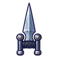
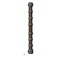
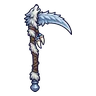

ผู้ช่วยนักดาราศาสตร์กลวง
มอนธาตุมืด Lv 51–58
เจอที่
| แมพ | โซน | Lv | ในแมพ | ภูมิภาค |
|---|---|---|---|---|
| หอดูดาวนกฮูก ชั้น 2 | 54–56 | ≈20 | ดินแดนเหนือ | |
| หอดูดาวนกฮูก ชั้น 1 | 51–54 | ≈18 | ดินแดนเหนือ | |
| หอดูดาวนกฮูก ชั้น 3 · โดมดาว | 56–58 | ≈16 | ดินแดนเหนือ | |
| หอรากมืด (Dark Root) | รากกินดาว | 71–80 |
≈ จำนวนที่อยู่ในแมพพร้อมกันโดยเฉลี่ย คิดจากไฟล์เกม (จุดเกิดของแมพ × 4 แบ่งตามสัดส่วนของแต่ละตัว) ตายแล้วเกิดใหม่ที่เดิมใน 22 วินาที · ตอนเล่นออนไลน์เซิร์ฟเวอร์เป็นคนเกิดมอน อาจไม่ตรง
ค่าสถานะตามเลเวล
| Lv | HP | ATK | DEF | MDEF | EXP | Job |
|---|---|---|---|---|---|---|
| 51 | 14,199 | 113–170 | 18 | 17 | 70 | 53 |
| 54 | 16,516 | 120–180 | 19 | 18 | 74 | 56 |
| 58 | 19,751 | 128–192 | 21 | 19 | 79 | 59 |
ตีด้วยธาตุไหนดี
แรงขึ้น: ศักดิ์สิทธิ์ ×1.25
เบาลง: วิญญาณ ×0.75 พิษ ×0.5 มืด ×0 อมตะ ×0
วัตถุดิบที่ดรอป
| ของ | โอกาส | |
|---|---|---|
| เลนส์ร้าว | 55% | 1 ชิ้น (15% ได้ 2) |
อุปกรณ์ที่ดรอป (5)
| ของ | โอกาส |
|---|---|
 คาทาร์เจาะเกราะ | 0.25% |
 ไม้พลองเหล็กรัด | 0.25% |
 เคียวใหญ่หมาป่าเงาจันทร์ | 0.25% |
| 0.12% | |
| 0.06% |
สกิล
ม่านเวท (Lv 25+) · ม่านเวท (Lv 60+) · ยิงกระจาย (Lv 60+)